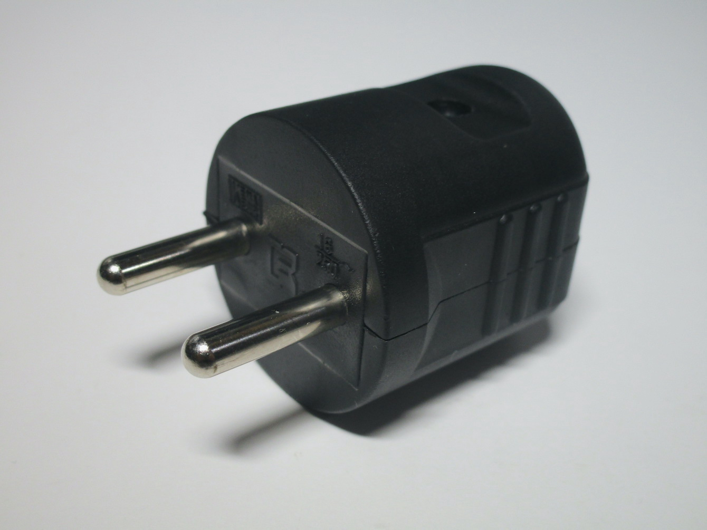
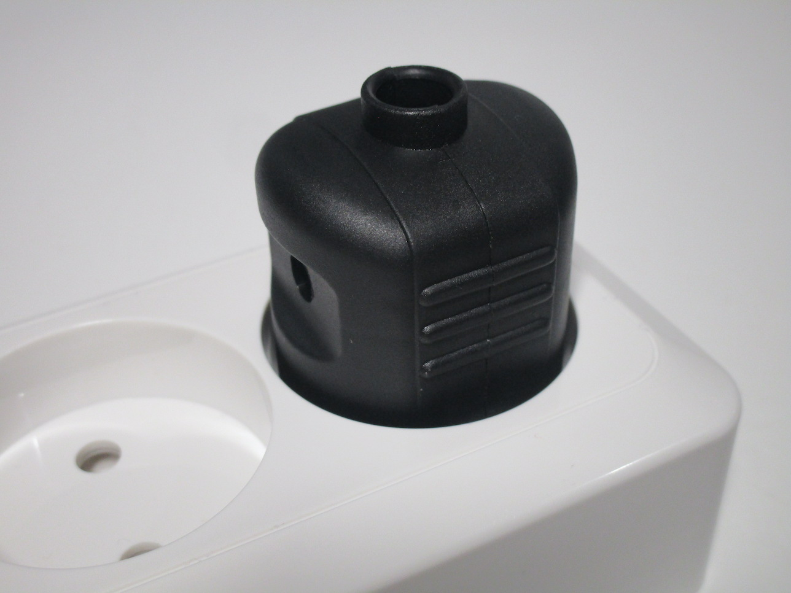
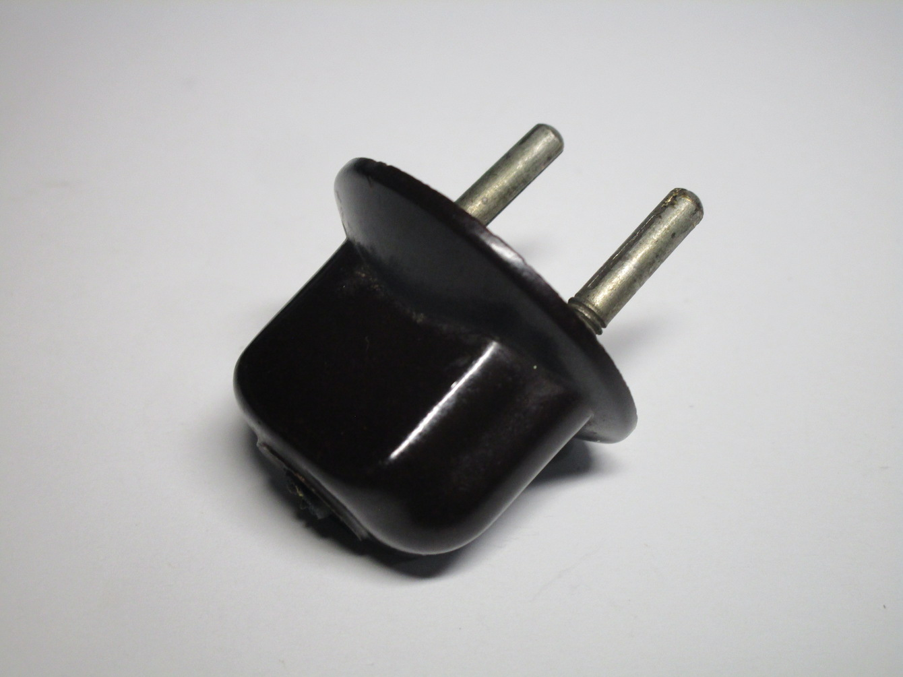
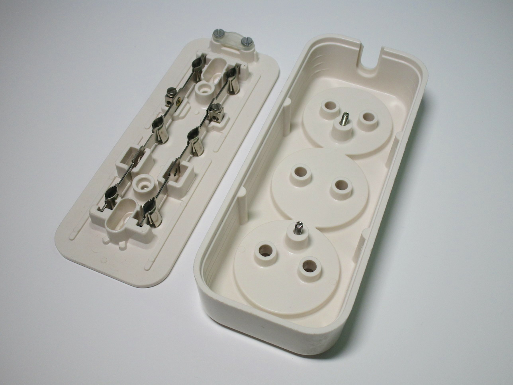
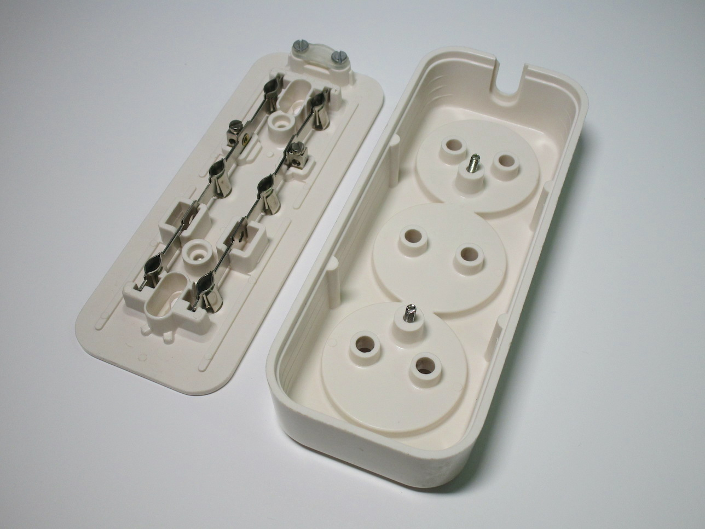

Two-pin European non-earthed plugs and sockets
Before the advent of earthed standards, various types of 2-pin unearthed plugs and sockets were used extensively
throughout Europe, and may still be found in older buildings.
While these plugs did vary in shape and design, depending on their age and the country they were produced in, all
of them use the same 19mm spacing between pins, a feature essential for intercompatibility.
These plugs generally have pins of either 4.0mm (for up to 10A) or 4.8mm (16A), depending on their rated current. Sockets capable of accepting both sizes of plug were common in most of Europe; there are also sockets which could only accept 4.0mm plugs, though these aren't very common outside of Italy and Switzerland or on older examples.
Sockets which accept both types of plug are nowadays known as CEE 7/1, and can still be bought for replacements
in some countries. Matching round plugs with 4.8mm pins are called CEE 7/2.
Notably, CEE 7/1 sockets accept earthed Schuko or French
plugs, despite the lack of earth connection, while CEE 7/2 plugs cannot be used with earthed sockets.
Standard non-earthed power socket
Rating: 16A 250V
This is a modern example of a CEE 7/1 socket, bought in the Netherlands, one of the few countries where these are still sold (for replacements). As common with these types of outlets, it has a very shallow recess, which means it's possible to touch the live pins of a partially-inserted plug. This socket also doesn't have any sort of safety shutters, though it does have a space inside for where a shutter mechanism would have gone.
Interestingly, this device can only be mounted to a wall-box using screws, as it lacks the side tabs found on most other devices used for older types of European wall boxes. This is quite odd given that this is a device specifically meant for replacing sockets in older houses.
{kind=link}
{kind=link}
{kind=link}
Surface-mount double socket
Rating: 16A 250V
This is another modern unearthed socket - however, this one is surface-mount and has two sockets on it; its main notable feature is the fact that the recess on it is much deeper than the socket shown above and will thus fully prevent someone from accidentally coming in contact with live pins.
The socket has pre-made intents in the outer plastic case in order to cut out holes for the incoming wires or conduit. The socket itself is screwed to the wall using the smaller plastic piece where the contacts and screw terminals are located.
{kind=link}
{kind=link}
{kind=link}
Modern CEE 7/2 non-earthed plug
Rating: 16A 250V
This is an example of a modern unearthed CEE 7/2 plug. Its most distinctive feature is the round base; this prevents people from being able to touch the live pins, but only if used with a recessed socket like the one shown above. This also prevents the use of this plug on Schuko or French-style sockets, something which was, oddly enough, actually done on purpose.
 {kind=link}
{kind=link}
{kind=link}
Old bakelite German-made plug
Rating: 6A 250V
This is a fairly typical example of an older version of one of these plugs. It's made of bakelite, and has split pins, both common features of plugs at the time.
Notably, this plug has pins of 4.0mm, and a rating of 6A - this was quite common on older plugs, as they were often used for lower powered appliances such as lamps. This also means that it can be used with sockets that don't accept 4.8mm plugs.
Unusually, this plug doesn't open; instead, the wires are connected at the front, with the strands going around the two pins and then being secured with two special nuts, which screw into the threaded section at the bottom of the pins of the plug.
{kind=link}
{kind=link}
{kind=link}
Round Swiss bakelite plug
Rating: 10A 250V
This style of plug was quite common in Switzerland, but faded away once recessed sockets were introduced.
It is virtually identical to other round 2-pin plugs in use in Europe at the time, with only the certification markings identifying as a plug meant for the Swiss market.

{kind=link}
{kind=link}
Old CEE 7/1 power strip
Rating: 10-16A 250V
This is a power strip with three unearthed CEE 7/1 sockets; the sockets have a very small recess and no safety shutters, likely due to the age of the device. The power strip is easily taken apart for wiring up to a cord, so it might have been sold without one (the one it came with didn't look to be original).
Oddly enough, this was produced in Italy (and was found at an Italian flea market), even though this style of socket wasn't ever in use over here (especially since plugs of this style with 4.8mm pins weren't a thing here). However, given the Dutch and Belgian certification markings on the back (and the lack of any Italian ones), this was very likely an export item.
 

{kind=link}
{kind=link}